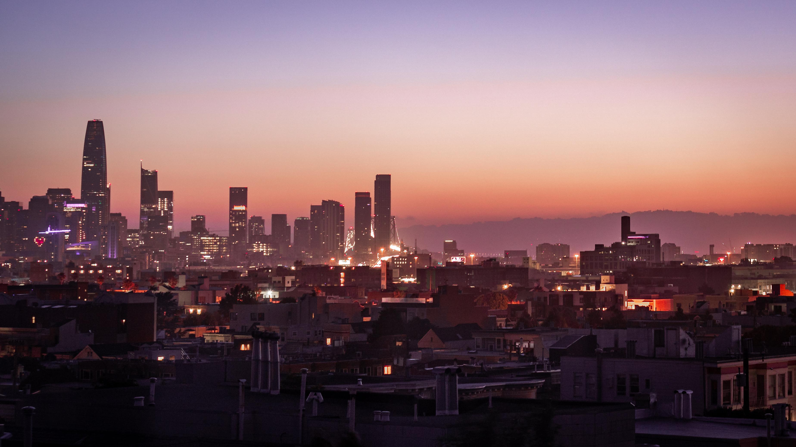
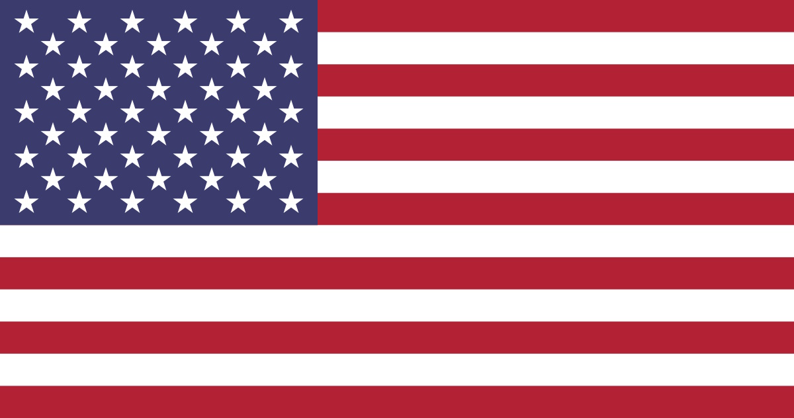

City: San Francisco
Country: United States of America
- Population: 808,347 (estimated as of 2022)
- Landmarks:
- Alcatraz Island
- The Golden Gate Bridge
- The Presidio of San Francisco
- Climate: Warm-summer Mediterranean Climate
- Brief History of San Francisco:
- San Francisco was founded by the Spanish Empire in the year of 1776 and its original name was Yerba Buena. It was renamed to San Francisco in 1847 by Washington Allon Bartlett.
- San Francisco is notable for the California Gold Rush which brought in enormous amounts of gold seekers who sought for the gold in California.
- San Francisco is a major global city, and the State of California center for commerce, finance, and culture.
- Facts of San Francisco:
- San Francisco is the capital and fourth most populous city in the State of California.
- San Francisco has multiple nicknames such as "the City" and "Frisco."
- During the dot-com bubble, many start-up were appearing in San Francisco. Today San Francisco is a major Tech hub and many major tech companies have offices here.
- San Francisco is located on the Northern part of the San Francisco Pennisula.

- 
- 